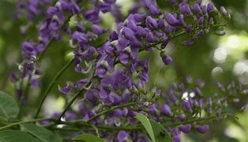
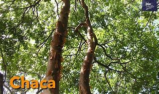
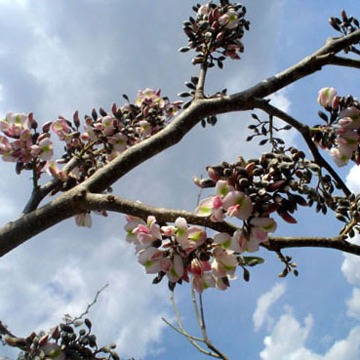
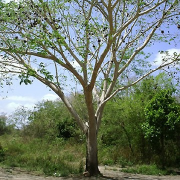

La flora de Yucatán es increíblemente diversa y está profundamente conectada con la historia y la cultura maya. En sus selvas y paisajes naturales, puedes encontrar especies emblemáticas. Además, Yucatán alberga más de 1,120 especies de plantas, representando aproximadamente el 6% del total nacional.
Balché El balché es un árbol con cuya corteza se elabora una bebida embriagante que lleva el mismo nombre, la cual se emplea en los rituales nativos de la península yucateca. El balché constituye uno de los símbolos de resistencia cultural que evidencia la continuidad de la antigua religiosidad maya, prohibida por los conquistadores. regresar ChaKá Su tronco se distingue por su forma y textura: se ramifica desde una baja altura torciéndose hasta llegar a su copa irregular y dispersa, mientras su corteza color cobre aparenta descarapelarse por fragmentos, mostrando por dentro un tronco liso, lustroso y oscuro. Por esta razón, el chacá es conocido popularmente como ‘palo mulato’. regresar Jabín Árbol que alcanza hasta 20 m. de altura, caducifolio, copa densa, corteza fisurada, hojas ovadas compuestas imparipinnadas, foliolos elípticos verde oscuros, flores en panículas ligeramente perfumadas, pétalos rosados o ligeramente morados florea de febrero a mayo, frutos en forma de vaina con alas de color café y alargados quebradizos al madurar. regresar Pich Árbol grande y llamativo, caducifolio, de 20 a 30 m. de altura, follaje abundante, hojas bipinnadas los foliolos se pliegan en la noche, ramas ascendentes, corteza lisa. Aplanada y enroscada leñosa, moreno oscuro, brillante, de sabor dulce, contiene de 10 a 20 semillas; semillas grandes ovoides y aplanadas de color moreno, brillantes con una linea pálida con la forma del contorno de la semilla, testa muy dura. regresar Makulis rosa
Tabebuia rosea comúnmente llamado Makulis se trata de un árbol nativo de las zonas tropicales, en su etapa de floración el árbol se queda sin hojas ofreciendo un espectacular follaje color rosa, es uno de los árboles que reproducimos desde germinación teniendo distintos tamaños y disponibilidad de semillas. regresar Derechos Reservados ©2025 Maria Cristina Cohuo Caamal |